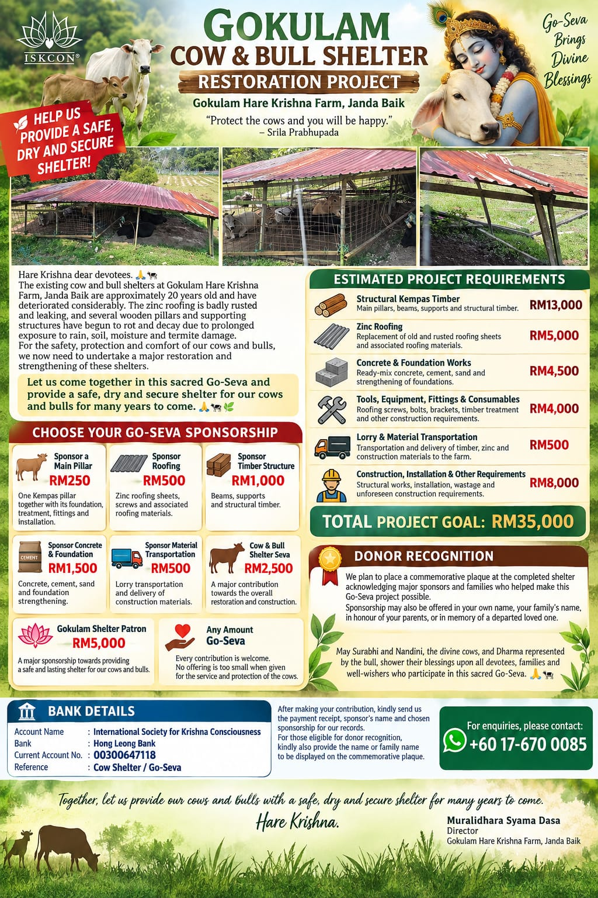

Structural Kempas Timber
Main pillars, beams, supports and structural timber.
Gokulam Hare Krishna Farm · Janda Baik
Help us provide a safe, dry and secure shelter for our cows and bulls for many years to come.

A Humble Appeal
Hare Krishna dear devotees. 🙏🐄
Please accept my humble obeisances. All glories to Srila Prabhupada.
We would like to bring to your kind attention the current condition of the cow and bull shelters at Gokulam Hare Krishna Farm, Janda Baik.
The existing structures are approximately 20 years old and have deteriorated considerably over the years. The old zinc roofing is badly rusted, and several areas are leaking whenever it rains.
Some of the wooden pillars and supporting structures have also begun to rot and decay due to prolonged exposure to rain, soil and moisture. Certain sections have also suffered termite damage, weakening the timber.
For the safety, protection and comfort of our cows and bulls, we now need to undertake a major restoration and strengthening of these shelters.
Estimated Project Requirements
Main pillars, beams, supports and structural timber.
Replacement of old and rusted roofing sheets and associated roofing materials.
Ready-mix concrete, cement, sand and strengthening of foundations.
Roofing screws, bolts, brackets, timber treatment and other construction requirements.
Transportation and delivery of timber, zinc and construction materials to the farm.
Structural works, installation, wastage and unforeseen construction requirements.
Choose Your Go-Seva Sponsorship
One Kempas pillar together with its foundation, treatment, fittings and installation.
Zinc roofing sheets, screws and associated roofing materials.
Beams, supports and structural timber.
Concrete, cement, sand and foundation strengthening.
Lorry transportation and delivery of construction materials.
A major contribution towards the overall restoration and construction.
A major sponsorship towards providing a safe and lasting shelter for our cows and bulls.
Every contribution is welcome. No offering is too small when given for the service and protection of the cows.
Donor Recognition
We plan to place a commemorative plaque at the completed shelter acknowledging major sponsors and families who helped make this Go-Seva project possible.
Sponsorship may also be offered in your own name, your family’s name, in honour of your parents, or in memory of a departed loved one.
May Surabhi and Nandini, the divine cows, and Dharma represented by the bull, shower their blessings upon all devotees, families and well-wishers who participate in this sacred Go-Seva. 🙏🐄
“Together, let us provide our cows and bulls with a safe, dry and secure shelter for many years to come.”
Hare KrishnaSupport the Restoration
Account Name: International Society for Krishna Consciousness
Bank: Hong Leong Bank
Current Account No.: 00300647118
Reference: Cow Shelter / Go-Seva
Kindly send us the payment receipt, sponsor's name and chosen sponsorship for our records.
For those eligible for donor recognition, kindly also provide the name or family name to be displayed on the commemorative plaque.
For Enquiries
Muralidhara Syama Dasa
Director
Gokulam Hare Krishna Farm, Janda Baik
🎯 PROJECT GOAL: RM35,000
Hare Krishna. 🙏🐄🌿
♥ View Main Donation Options